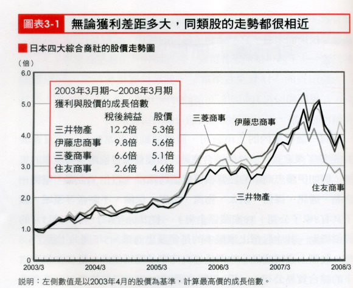
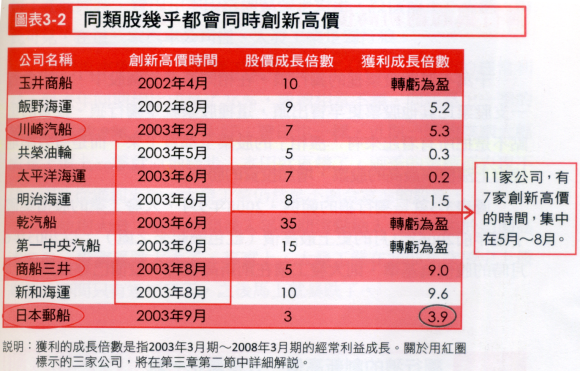
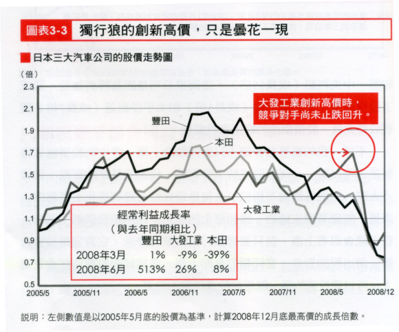

黃金律：買進強勢類股中的最強勢股票
巨波投資法黃金守則第一條：「在上漲趨勢中買進強勢類股中的最強勢股票。」這個觀念可能很難被一般投資者接受，就連專業投資者，我們最常聽到的投資方法也是「逢低買進」「買低基期賣高基期」。沒有漲到的弱勢股，對大多數的投資人具有無法抗拒的誘惑，因為買強勢股，就是「追高」替別人抬轎，買落後股就是發現「蒙塵」的珍珠同時也比較安全。
然而最終我們將發現，大部分都是玻璃而很少有蒙塵的珍珠，落後股要起死回升通常需要奇蹟，而大盤在跌的時候，所有的股票都一樣會跌，安全的假象可能是更糟糕的錯覺。
理論：行業 、市場對個股的影響比公司本身要大
「現代多項精密的統計研究及數據已充分地支持道氏理論的上述觀點，如一項研究結果顯示，對上市公司股票價格影響最大的個別因素，按其重要性依次排列分別為：1)行業；2)市場；(3)公司本身；(4)整體工業。其中行業與市場兩項，合計對上市公司股票價格的影響力超過50%，而公司自身因素對股票價格的影響，其均值約為20%。如果上述(1)、(2)、(4)項相加，即公司外部環境因素對公司股票價格的影響，則大約佔80%。」(道氏理論/陳東)
大師看法
科斯托蘭尼：「如果整體發展趨勢呈正面，投機人上便必須找出成長潛力最大、機會最好的股票。首先，必須知道哪些行業將從未來發展中獲利，在發現行業後，還必須從中篩選出發展潛力最大的企業，再購買這些公司的股票。」
李佛摩：「專心致力研究當時表現最突出的股票。假如你無法從表現領先的熱門股身上賺到錢，你就別想從整個股市裡賺到錢。」
李佛摩：「我認為應當針對市場龍頭股做交易，和龍頭類股中表現最強勁的股票並肩作戰。不要撿便宜貨、難兄難弟股，你必須和主流類股中的領頭羊、主力、表現最強勢的股票保持形影不離。你還必須留意， 這檔股票不見得是該類股中傳統上的那檔領導股。有時 候，該類股中會出現一檔規模較小、經營完善的股票來領導行情，也許是因為它推出新產品，所以打敗了老牌領導股。小心警覺！挑選該類股中走勢最強勁的股票， 而不是最便宜或在敗部等復活的股票。」
上漲段中的類股比較
表一係99年5月25日(7032)至99年12月31日(8972)各類股平均漲幅統計。大盤漲了1940點或27.6%，你如果買進ETF臺灣五十，可以得到25%的獲利，但即使在如此大的漲勢中，你如果買進網通類股、IC設計類股等，在六個月中你的績效將非常差。
表一之二顯示，如果選對類股在太陽能、Ultrabook、觸控面板、LED、智慧型手機等類股上都有50%以上的漲幅，反之，如果偏不信邪，執意要佈局中概內需、金融或ETF，則績效不到25%，少了一半。
表二為表一中IC設計類股個股漲幅，雖然其中也有幾檔績效勝過0050，但比率大約為4/37約10.8%；表三為ECFA類股個股漲幅，績效勝過0050之比率大約為44/77約57.1%，操作後者勝過大盤的機率提高4.7倍。再以最大漲幅而論，IC設計漲幅超過40%只有2檔，漲81%，而ECFA類股超過40%者有聚隆等共30檔。
由以下三個表得到的結論是：在上漲趨勢中，作多主流股超越大盤的機率以及漲幅都會遠勝過非主流股。
表一、99年5月25日(7032)至99年12月31日(8972)各類股平均漲幅統計
| 類股 | 平均漲幅(%) | 類股 | 平均漲幅(%) |
|---|---|---|---|
| HDI | 40.99 | 0050 | 25 |
| 資產 | 40.54 | 生技 | 23.82 |
| 金融 | 39.4 | 電動車 | 23.07 |
| 十二五 | 36.14 | 觸控面板 | 22.51 |
| 農金 | 35.48 | 搏奕 | 11.28 |
| 智慧型手機 | 34.92 | USB3.0 | 8.64 |
| ECFA | 34.91 | 物聯網 | 8.57 |
| 太陽能 | 34.25 | 雲端運算 | 8.54 |
| 觀光 | 29.02 | 網通設備 | 7.45 |
| 中國內需 | 28.64 | IC設計 | 4.85 |
| 中概 | 26.59 | Kinect | 4.2 |
表一之二、100年12月19日(6609)至101年3月2日(8170)各類股平均漲幅統計
| 類股 | 平均漲幅 | 類股 | 平均漲幅 |
|---|---|---|---|
| 太陽能 | 58.77 | 智慧電網 | 37.24 |
| Ultrabook | 56.95 | 雲端運算 | 36.73 |
| 觸控面板 | 53.6 | Kinect | 36.33 |
| LED | 51.7 | 觀光 | 31.7 |
| 智慧型手機 | 51.17 | 電動車 | 31.67 |
| IC設計 | 50.29 | 資產 | 30.53 |
| 網通設備 | 47.77 | ECFA | 28.89 |
| USB3.0 | 42.61 | 中國內需 | 28.38 |
| 生技 | 41.67 | 十二五 | 27.76 |
| 物聯網 | 41.15 | 農金 | 25.16 |
| 汽車電子 | 40.87 | 金融 | 22.2 |
| 搏奕 | 37.65 | 水資源 | 21.18 |
| 0050 | 19 |
表二、表一中IC設計類股個股漲幅
※淺藍底者為績效勝過0050
| stkname | 漲幅 | stkname | 漲幅 | stkname | 漲幅 |
|---|---|---|---|---|---|
| 創惟 | 81.1 | 盛群 | 6.4 | 驊訊 | -7.1 |
| 威盛 | 41.7 | 迅傑 | 5.9 | 致新 | -7.3 |
| 旺玖 | 35.7 | 系微 | 4.7 | 群聯 | -8.2 |
| 聯陽 | 34.6 | 義隆 | 3.5 | 旭展 | -8.4 |
| 普誠 | 22.2 | 松翰 | 1.7 | 晶豪科 | -13.7 |
| 偉詮電 | 19.8 | 茂達 | 0.6 | 立錡 | -14.1 |
| 金麗科 | 17 | 瑞昱 | -0.4 | 凌泰 | -14.7 |
| 智原 | 16.7 | 駿億 | -0.9 | 揚智 | -14.8 |
| 矽統 | 14.9 | 通泰 | -1.1 | 聯發科 | -15.1 |
| 聯詠 | 12.4 | 太欣 | -4.2 | 原相 | -17.1 |
| 世紀 | 9.4 | 凌陽 | -5.1 | 凱鈺 | -21.9 |
| 創意 | 9.4 | 鈺創 | -5.5 | ||
| 研通 | 7.4 | 類比科 | -5.9 |
表三、表一中ECFA類股個股漲幅
※淺藍底者為績效勝過0050
| stkname | 漲幅 | stkname | 漲幅 | stkname | 漲幅 | stkname | 漲幅 |
|---|---|---|---|---|---|---|---|
| 聚隆 | 174.6 | 萬海 | 50 | 南港 | 27.2 | 建大 | 6 |
| 上銀 | 146.7 | 臺南 | 48.7 | 東鋼 | 27.1 | 亞崴 | 5.1 |
| 中石化 | 105 | 臺聚 | 47.5 | 巨大 | 27 | 盛餘 | 4 |
| 裕隆 | 100.7 | 東臺 | 44.6 | 臺苯 | 26.8 | 車王電 | 3.4 |
| 中砂 | 87.1 | 益航 | 42.3 | 中壽 | 22.7 | 燁輝 | 1.8 |
| 南紡 | 79.8 | 華南金 | 42.1 | 美利達 | 22.5 | 正新 | 0.8 |
| 國喬 | 79 | 聯成 | 41.5 | 利奇 | 21.6 | 臺航 | -0.5 |
| 新紡 | 76.2 | 華夏 | 40.6 | 亞泥 | 21 | 聚陽 | -1.6 |
| 華新 | 71.3 | 臺化 | 40.1 | 集盛 | 20.6 | 中航 | -2.9 |
| 三陽 | 71.3 | 江申 | 38.8 | 泰豐 | 19.8 | 四維航 | -3.8 |
| 第一金 | 69.4 | 中信金 | 38.1 | 士電 | 17.3 | 中菲行 | -3.8 |
| 新纖 | 67.2 | 南亞 | 37.4 | 長興 | 16.2 | 鑽全 | -5.2 |
| 遠紡 | 66.6 | 豐興 | 33.6 | 瑞利 | 16.1 | 高鋒 | -5.5 |
| 永大 | 64.4 | 元大金 | 31.7 | 力鵬 | 15.8 | 錩泰 | -6.4 |
| 中華 | 62.9 | 臺達化 | 31.5 | 國泰金 | 14.5 | 東陽 | -7.5 |
| 開發金 | 62.2 | 臺塑化 | 30.1 | 中鋼 | 12.8 | 富強鑫 | -7.8 |
| 臺新金 | 58.3 | 臺泥 | 28.6 | 嘉裕 | 11.5 | 耿鼎 | -13.4 |
| 聚亨 | 58 | 高林股 | 28.4 | 富邦金 | 11.1 | ! | ! |
| 臺橡 | 54.3 | 大億 | 28.3 | 協易機 | 8.8 | ! | ! |
| 臺塑 | 52.3 | 恩德 | 27.9 | 堤維西 | 6.1 | ! | ! |
中期回檔段中的類股比較
由下表可以看出，當大盤下跌的時候，幾乎所有的股票都會下跌。明智的做法應該是暫時停止交易。表四比較值得注意的是，最弱勢的太陽能在表五中卻是最強勢的，觸控面板在99年的下半年躍為主流之一。由此可見，主流股是經常在變換的。
表四、98年12月31日至99年5月25日中期回檔(8188-7032)
| 類股 | 平均漲幅 | 類股 | 平均漲幅 |
|---|---|---|---|
| 新莊副都心 | 2.22 | 資產 | -15.29 |
| 農金 | -1.7 | 電動車 | -16.06 |
| 中國內需 | -1.89 | 物聯網 | -16.52 |
| ECFA | -6.79 | 車用電池 | -16.68 |
| 生技 | -7.3 | HDI | -18.09 |
| 雲端運算 | -9.14 | 智慧型手機 | -18.39 |
| 中概 | -9.41 | 搏奕 | -18.68 |
| 長江災後重建 | -11.29 | 金融 | -20.5 |
| 觀光 | -12.62 | 網通設備 | -21.43 |
| 0050 | -13 | 智慧電網 | -21.54 |
| 水資源 | -13.58 | USB3.0 | -22.78 |
| LED | -14.4 | 太陽能 | -24.06 |
| 十二五 | -14.98 | IC設計 | -24.11 |
| 汽車電子 | -15.18 | 觸控面板 | -28.81 |
盤整段的類股比較
表五顯示，在盤整段中仍然會有某些類股大幅領先大盤。這個結果顯示，第一、在盤整段中你仍然應該積極選股。第二、選擇主流股與使用ETF的優劣在這個階段表露無遺。
表五之二則顯示，在盤整段依然會有比較強的類股沒有錯，但已經非常少。另外一個問題是，通常也只有在事後才能得知是盤整還是下跌，所以在研判為盤整段時必須做好資金控管，謹慎操作。
表五、98年10月15日至98年12月16日各類股平均漲幅統計
| 類股 | 平均漲幅 | 類股 | 平均漲幅 |
|---|---|---|---|
| 太陽能 | 29.03 | iPhone | 8.14 |
| 智慧電網 | 27.66 | 中國內需 | 7.89 |
| 雲端運算 | 22.38 | 汽車電子 | 7.65 |
| 搏奕 | 15.71 | ECFA | 5.77 |
| 網通設備 | 14.96 | 農金 | 4.16 |
| 生技 | 14.95 | 資產 | 2.4 |
| 物聯網 | 14.09 | 長江災後重建 | 0.53 |
| IC設計 | 13.47 | 電動車 | -0.66 |
| Kinect | 12.52 | 車用電池 | -0.85 |
| LED | 11.58 | 新莊副都心 | -1.91 |
| 觀光 | 10.81 | 0050 | -2.7 |
| 中概 | 10.14 | TDR | -6.54 |
| 水資源 | 8.52 | 金融 | -8.6 |
表五之二、100年4月8日(8929)至101年7月27日(8819)各類股平均漲幅統計
| 類股 | 平均漲幅 | 類股 | 平均漲幅 |
|---|---|---|---|
| 農金 | 12.28 | 生技 | -5.38 |
| 中國內需 | 12.15 | IC設計 | -6.18 |
| 資產 | 8 | 風力發電 | -8.12 |
| iPhone | 7.31 | 汽車電子 | -8.97 |
| 金融 | 6.4 | 搏奕 | -9.01 |
| 0050 | 0.4 | USB3.0 | -10.46 |
| 雲端運算 | -1.11 | 物聯網 | -12.2 |
| 智慧型手機 | -2.14 | 智慧電網 | -13.81 |
| 觀光 | -2.42 | 觸控面板 | -15.68 |
| 網通設備 | -2.55 | LED | -20.32 |
| Ultrabook | -4.15 | 太陽能 | -26.92 |
| Kinect | -4.24 |
同一類股中強、弱勢股比較
表六中比較前3名與後3名的績效表現，其差異豈止是20倍。所以你不但必須選擇強勢類股，還要選擇該類股中的強勢股，千萬不要買弱勢股以為它一樣會跟著大漲。
表六、表五中太陽能類股漲幅明細
| stockId | stkname | 98/10/15收盤 | 98/12/16收盤 | 漲幅 |
|---|---|---|---|---|
| 3561 | 昇陽科 | 24.2 | 57.6 | 138 |
| 3514 | 昱晶 | 54.9 | 100.5 | 83.1 |
| 5326 | 漢磊 | 9.41 | 15.25 | 62.1 |
| 1711 | 永光 | 21.1 | 33.5 | 58.8 |
| 2491 | 吉祥全 | 3.35 | 5.21 | 55.5 |
| 6244 | 茂迪 | 95.2 | 132 | 38.7 |
| 2434 | 統懋 | 17 | 23.2 | 36.5 |
| 2481 | 強茂 | 21.7 | 27.75 | 27.9 |
| 3452 | 益通 | 68.9 | 86.7 | 25.8 |
| 2367 | 燿華 | 11.75 | 13.5 | 14.9 |
| 5483 | 中美晶 | 78.5 | 88.1 | 12.2 |
| 3016 | 嘉晶 | 34.9 | 38.9 | 11.5 |
| 6182 | 合晶 | 54.2 | 60.1 | 10.9 |
| 2342 | 茂矽 | 16.55 | 18.1 | 9.4 |
| 3043 | 科風 | 24.9 | 26.9 | 8 |
| 2426 | 鼎元 | 30 | 30.6 | 2 |
| 6125 | 廣運 | 29.25 | 29.8 | 1.9 |
| 3532 | 臺勝科 | 83.8 | 80.3 | -4.2 |
| 2323 | 中環 | 8.05 | 7.59 | -5.7 |
| 5425 | 臺半 | 30.7 | 28.65 | -6.7 |
結論
也許以上的說法都能獲得共識，但大多數的人還是會這樣說：「沒錯！只要能抓到主流，但問題是，你抓得到嗎？」這個問題也對，主流真的不容易抓到，但如果參悟其中的奧妙，恭喜你，你就是贏家了。
附錄
傑西‧李佛摩「股市操盤術」第三章。
股市永遠存在著誘惑，在經歷一段時間的成功之後，人很容易會變得失去戒心，過於野心勃勃。這時就需要有充分的常識與清晰的思路以便能持盈保泰。倘若你不過份樂觀而且又有清楚的頭腦，堅決謹守可靠的交易原則，就能逃過損失財富的劫數。
我們都知道價格會上下跳動，過去如此，將來也必如此。依我之見，「在重大的價格變化背後，有一股難以抗拒的力量。」所有的人都要明瞭這一點。對價格變動的背後原因太過好奇是不好的；太過好奇的風險在於你的心會被太多不重要的事情所羈絆。你惟一要搞清楚的是，變動存在於此，而你必須揚帆破浪以投機獲利。不要與已經擺在眼前的狀況爭辯，而且最要緊的是，不要嚐試與之對抗。
你還必須謹記的一點是不要想一網打盡；我的意思是「不要在同一時間內介入太多股票。幾檔股票比一大堆股票容易照顧。」幾年前，我犯下這樣的錯誤，而且也損失了不少錢。
不要縱容自己對整體股市不是完全看多就是完全看空，因為某些特定類股中的單一個股就是會出現與一般市場趨勢背道而馳的表現。儘管其它類股中有某幾檔股票告訴我它們的走勢已經到了盡頭，我們在作決定執行手中的交易前，仍當耐心靜待操作時機的來臨。時間一到，這些股票自然會明確地出現相同的信號。這才是我在等候的線索。
但是，我以前從不這麼做，我有強烈的慾望想打遍股市無敵手，鎮日汲汲營營的結果讓我付出了慘痛的代價。頻繁進出的渴望壓倒了常識與研判。當然，我對第一組和第二組類股的操作讓我賺到了錢。但是，我因進攻信號尚未出現就跳入另一類股而吐出不少原先的獲利。
回想二Ｏ年代末期那個多頭狂奔的時期，我很清楚地看到銅礦股的漲勢已到盡頭。沒多久，汽車類股也走到了最高點。由於這兩個類股的多頭已死，我很快地就做出一個錯誤的結論：我可以開始放心大膽地放空所有股票。我依此前提操作所損失的財富至今仍叫我耿耿於懷。
我自銅礦及汽車類股歡呼收割的財富，還不及我在接下來那六個月裡為尋找公用事業類股頭部所損失的金額。最後，公用事業類股和其它類股的確地做頭而下。
當時，Anaconda自其高點下滑了50點，汽車類股的跌幅比例也相去不遠。
我要請你記住的是，當你清楚地看到某一類股的變動時，就操作那個類股。絕對不要讓自已拿那一套去操作其它的類股，除非你清楚地見到後者也出現同樣的信號。要有耐心、要能等待。假以時日，第二類股會像第一類股那樣給你相同的暗示。但就是不能以偏蓋全。
專心致力研究當時表現最突出的股票。假如你無法從表現領先的熱門股身上賺到錢，你就別想從整個股市裡賺到錢。
正如女人的服裝、帽子與珠寶永遠都在變一樣，股市中的主流類股也是此起彼落的變換。多年以前的主流類股是鐵路股、美國糖業和煙草類股。再來換成鋼鐵，美國糖業和煙草類股則悄悄走入歷史。按著汽車類股出現，這樣的戲碼至今仍不斷上演。
在一九四Ｏ年的今天，只有有四種類股有能力左右股市行情：鋼鐵、汽車、飛機製造、以及郵購類股。它們都沒有行情時，整個市場就不會有行情。隨著物換星移，新的領導股昇起，舊的領導股會損落。
只要股市存在一天，這樣的情況就會繼續下去。
同一時間操作許多檔股票絕對很不安全，你會感到混亂和迷惑。試著在少數類股之間做比較性分析。你會發現這麼做比剖析整體市場以得知真象來得容易許多。
假如你能自四個表現突出的類股中挑出兩檔股票並針對其走勢做出正確的分析，其它股票的表現如何就輪不到你關心了。自古以來皆是：「追隨主流股」。但是，也勿忘要保持心理上的彈性。要知道今日的主流股很可能在兩年後就盡失光環。
現在，我針對四個不同的類股作記錄。這並不代表我在同一時間內交易這四種類股，我心裡自有完美的盤算。
當我十五歲那一年第一次對過去長時期以來的價格變動感到興趣時，決定要來測試一下自己正確預測未來變動的能力。
我在隨身攜帶的小本子中記下虛構的交易。過些日子，我出手成交第一筆真實的交易。我永遠忘不了這次買賣 ，我和一位朋友五五分帳合買了五股芝加哥Burlington&Quincy鐵道公司的股票，我的個人獲利是3．12美元。自那筆交易後，我成為獨力操作的投機客。
以目前情況來看，我不相信一個一向交易龐大的舊式投資客能有多少成功的機會。我所謂的舊式投機時代指的是那些市場龐大且流動性高、投機客每天5，000股或10,000股進進出出又不會對股價影響很大的年頭。
在那個時候，如果第一筆交易做對了，投機客可以很放心地一路加碼；一旦發現研判有誤，不用損失太多錢，投機客便可輕易脫身。然而，現在的情況不同了，假如第一筆交易證實失誤，投機客必要承受龐大的損失否則難以脫困，因為市場以比較基準而言是變狹窄了。
但在另一方面，誠如我在前面章節裡已經提到過的，一個有耐心、有判斷力、能靜待出手時機的投機客如今有較多的機會可以在股市裡賺到錢，因為現在的股市比較沒有人為炒作的空間。以前，人為炒作司空見慣，所有的科學性預測皆無用武之地。
因此，衡諸目前狀況，很明顯的一個事實是：有智慧的投機客決不會想要用過去看來順理成章的方法來炒作股票。聰明的投機客研究一定數目的類股以及這些類股之中的領導股。他會學著三思而後行，市場已經邁入了一個新紀元，在這個屬於新紀元的股市裡，有理性、努力用功、有能力的投資人和投機客都會有更安全的機會得以走上致富之路。
科斯托蘭尼的選股邏輯
以下是安德烈‧科斯托蘭尼「一個投機者的告白」「從股票交易所到交易股票」一章中所描述的選股邏輯。 (綠字是我加的)
大盤趨勢最重要
大盤好的時候每個人都能賺錢，但能否脫穎而出的關鍵在於選股。
「到目前為止，我只分析股票市場，但只有手中握有正確股票的人，才能賺到百分之一千或百分之一萬的鉅額利潤。」
投資最看重的是普遍的趨勢，其次才是選股。
「根據經驗，沒有人的選股技術，可以好到即使股市普遍下跌也能賺到錢。如果指數趨勢往下走，只有極少數的幾種股票能擺脫盤勢，充其量是成長型行業可以維持原來水準，這些行業中最好的企業也許能有發展，但是誰能事先知道，哪些企業是屬於這類型？不論在任何地方，都無法指望指數迅速上漲。如果貨幣因素不利，大家也不會有多餘的錢購買具潛力的股票，但如果證券市場趨勢轉變，影響貨幣的因素轉為正面，這時成長型股票就會像火箭一般直線上升。」
「在指數呈現上漲的過程中，如果流動資金充足，那些經歷過黃金時代，或正處在於萎縮中的行業，也能保持良好的狀態。不過一旦出現跌勢，這些股票便會驟然下跌。所以結論是，在指數上漲過程中，即使是最差的投機人士也能賺到一些錢；而在指數下跌過程中，即使挑到好股票的人也賺不到錢。因此投資最看重的是普遍的趨勢，其次才是選股，只有投資經歷至少二十年之久的投資者，才用不著太關心整體發展趨勢。」
成為富人的機會-選到飆股
TopDown由上而下選股法：先選行業再選公司。
「如果整體發展趨勢呈正面，投機人上便必須找出成長潛力最大、機會最好的股票。首先，必須知道哪些行業將從未來發展中獲利，在發現行業後，還必須從中篩選出發展潛力最大的企業，再購買這些公司的股票。」
眾所皆知的股票最好避開，但所謂的成長股，通常已經是人盡皆知且股價太高了。
「但是小心！誠如我提醒自己的原則：證券交易所中人盡皆知的事情不會讓我激動。當大眾發現成長型行業時，指數通常已非常高，包括今後幾年，甚至幾十年的增長，都已先行反應在指數上了。科斯托蘭尼雞蛋的原理當然也適用於具體行業，甚至是具體的股票。當整個市場還處於上漲過程中的第二階段時，股票極有可能被超量購買。」
「投機人士必須比一般大眾提前發現成長型行業，只有這樣，才有機會在合理價格時進場。如果等到這一行業成為證券交易所中的時髦行業，投入的能量就會增加十倍，有時甚至會增加一百倍，許多過去的股票都證明這一點。」
股票的價格
股價永遠不會和公司的實際價值相等，沒有所謂的合理價格。太過注重本益比可能會失去許多大的投資機會。
「顯然，股價永遠不會和公司的實際價值相等，總是或高或低於實際價值。股票難道不具有可以衡量的客觀價值嗎？如果真是這樣，大家就能夠指出某個企業的確切價值，也不會有證券交易所了，自為每種股票都會有固定的價格，也可以透過電腦計算出來。然而，事實並非如此，所以，所有想透過電腦，或其他神奇法則預測發展趨勢的試驗都失敗了，更不用說想準確預知指數了。
即使是對某種股票本益比的判斷，也是心理因素使然，有可能分析家認為某種或同一種本益比十五的股票過低，並以此判斷該股票的價值被低估，但在其他時候，他們卻稱同一種股票的本益比過高。因此，大家無法得出持續發展的結論，因為斷定「過低或過高」不是算術公式，而是一種心理因素的相對判斷。如果大家把本益比看成是證券交易分析的乘法表，就應該買IBM、微軟的股票，而不可以購買網路股票，因為根據這種計算方法，網路股總是行情過高，而很多股票不論過去或現在一直都在虧損，本益比甚至是負值。假如我只把賭注押在本益比上，可能會錯過大的投資機會。」
從死灰中復活的鳳凰
尋找成長股是非常困難的。
「提前認知並捕捉到未來的成長型行業，是非常困難的。為什麼微軟和IBM能夠成為市場主宰？在今天來看，一清二楚，但是誰能在二十年，甚至四十年前知道這些？除非投機者是每個行業中的專家，能夠準確認識和理解技術上的細節。但這是不可能的，因此我常把賭注押在所謂的轉機股票上。」
轉機股是科斯托蘭尼最喜歡作的股票。
「轉機企業是指陷入嚴重危機、虧損、甚至即將倒閉的企業，這些企業的股票指數相對徘徊在谷底，但如果這些企柴能扭轉局面，重新獲利，指數便會直線上漲。」
把跌到只剩下一折的股票賣掉完全是種瘋狂的舉動。
「我曾經做過的克萊斯勒股票，便足最漂亮的一次轉機股交易。七O年代末，當這家世界第三大汽車製造業幾乎要破產時，我以每股三美元的價格購買，經紀人建議我作做短線交易，因為這家企業肯定會破產。這種看法進一步證明經紀人這一職業的侷限性，完全不考慮基本形勢，就短線操作而言，要賣掉一種已經從五十美元跌到三美元的股票，完全是種瘋狂舉動。」
轉機股的風險利潤比可能非常划算。
「機會和風臉沒有任何關係，如果這家企業真的破產，損失利潤是每股三美元，但如果企業拯救成功，獲利卻可能是三十美元或更多。在克萊斯勒股票這件事上，我一如往常般，採取和經紀人建議相反的行動。而且非常幸運，富傳奇色彩的汽車製造經理艾柯卡，讓美國國會相信克萊斯勒公司有生存能力。他採取一系列明智的作法，利用全新的模式整頓企業，於是股價從三美元開始迅速攀升，到了今天，兌換成賓士克萊斯勒股票後，股價達到一百五十美元左右。」
買轉機股也必須判斷其轉機的成功率，並不是每一家即將倒閉的企業都能扭轉倒閉的噩運。
「並不是每一家即將倒閉的企業都能扭轉倒閉的噩運。大家在購買股票前，必須想到，一家企業憑什麼成為轉機股，在克萊斯勒股票這件事上，我把賭注押在艾柯卡身上，但我沒有買布萊梅火山船廠或泛美航空的股票，因為我看不到這些企業翻身的機會。」
以下摘自「巨波投資法」
基本面分析者的兩大陷阱
是的，也許我是有點不給大傻瓜面子，竟然把本章開始的引言再講了一遍。但是我要強調的重點是：篩選股票時，基本面濾網和技術面濾網合而並用，十分重要。不這麼做的話，基本面分析者有可能像自稱是投資大師的大傻瓜那樣，掉進兩種陷阱裡面的至少一種。
說明這些陷阱時，首先請回想要點二所說，根據基本面分析的信條，短期內，一家公司的股價可能高於或低於它的公平價值，但是長期而言，股價總是向它的公平價值看齊。不過，到底要多 「長」的時間，股價才可能找到它的公平價值？
很遺憾，答案是：所謂長期，當然有可能長到基本面分析者在幾個月，甚至幾年的期間，發生龐大的損失。接下來的內容，說明瞭基本面分析者最常掉進的兩種陷阱；大傻瓜在空頭市場繼續鼓吹科技股，結果兩種陷阱都誤蹈。
陷阱一：壞市場中的好股票
基本面分析者可能投資基本面強勢的公司，但他們是在整體的壞市場中這麼做。當然，他或她勢必賠錢，因為極少股票能在下跌趨勢市場上漲一一我要補充一句，利用技術面分析，很容易察覺市場趨勢是不是向下。
你當然可以這麼說，如果基本面分析者抱牢股票的時間夠長，市場和個股都有可能回升。沒錯，你是可以那麼說。但是舉例來說，難道你真的想在2000年3月到2002年8月間抱牢基本面強勢的股票，眼睜睜看著它在這段期間跌掉50%到80%嗎?不，用我們的精明巨波投資法，可以做得遠比持股抱牢的大傻瓜好很多！
陷阱二：壞類股中的好股票
基本面分析者可能投資壞類股中的好公司。談到這一點，一個相關的事實是，一支股票一半以上的波動，和它所屬類股的波動有關，和它如何管理本身的營運活動沒有關係。這是為什麼我會說，如果你在錯誤的時機選錯類股，就算你買到世界上管理最優良、資產負債表最好看的公司股票，到頭來還是會賠上一大筆錢。
要點七：基本面分析濾網和技術面分析濾網並用
技術面分析者和基本面分析者水火不容。基本面分析者指技術面分析者用了一大堆畫圖魔法。技術面分析者則嘲笑基本面分析者選上基本面很好卻跌得很快的股票；他們的嘲笑不無道理。
那麼誰對誰錯呢？雙方都對，也都不對！你買進的任何股票或類股，技術面和基本面都必須強勢才行。你想要放空的任何股票或類股，技術面和基本面都必須弱勢才行。...
以下摘自(飆股的長相：我不看財報，照樣選對股票 )
別買業界裡的「獨行狼」
看中一檔股票 ，耍和同類股先比較
本節會先介紹「獨行狼」股票。在日本街頭很常見到一句交通 標語：「綠燈了，還是要看看左右再通行。」這句話用在投資上同 樣有效。例如，你看見某檔股票的股價創下新高，而且無論從基本 面還是技術面來看，它都達到了飆般的條件，這就是出現「綠燈」 的訊號 不過，請別急著買進，你應該先「注意左右來車」。
股市裡的「注意左右來車」，就是檢查這檔股票的同類股動 向。如果同類股沒有朝創新高價的方向上漲，就要特別注意，因為 你鎖定的股票，很可能是脫離群體行動的獨行狼。
同一個行業內的上市公司，股價波動會非常類似。下頁圖表3-1記錄了幾傢俱代表性的綜合商社(指經營項目橫跨多種產業的集 團，例如伊藤忠商事的經營項目就橫跨纖維、石化、金屬、電機、 食品、通訊、媒體、航太、物流、金融、保險、不動產等領域，旗 下共有8家子公司、18家關係企業)，從2003年4月~2008年3用的 股價變動。其中股價上漲最多的是伊藤忠商事，5年間共上漲了5．6 倍。股價上漲幅度最小的則是住友商事(簡稱住商，是住友集團旗 下的綜合貿易公司)，但5年間也漲了4.6倍。三井物產和三菱商事 (日本最大的綜合商社)的表現，則為中等。
看完股價，我們來看看這四家公司的獲利表現如何。一樣請見 下頁圖表3-1，在2003年3月期~2008年3月期，這四家公司的稅後 純益成長幅度，最大的是三井物產(12.2倍)，最小的是住友商事 (2.6倍)，伊藤忠商事是9.8倍，三菱商事是6.6倍。
這四家公司的獲利差距很大，K線的走勢卻相差無幾，而且股價 漲幅最高的伊藤忠商事，並非是獲利成長最多的一檔股票，而且三 井物產和三菱商事的獲利成長幅度差了一倍，股價的成長幅度卻差 不多。由此可見，這些數字沒有太大的意義，當你在看中一檔股票 時，務必與同產業的個股一起比較。

同類股幾乎都會同時創新高價
同類股除了走勢相近，也幾乎會同時創新高價。請見圖表3-2， 這張圖表所列舉的個股都是海運公司，11家公司中有7家在2003年5 月~8月之間創新高價，而且每家公司突破史上最高價的時間，都出 現在2007年。
海運類股和圖表3-1的四家綜合商社相比，股價的成長倍數落差 更大，這是因為它們的獲利落差實在很大。像乾汽船(成長35倍) 和第一中央汽船(成長15倍)，這兩家公司是因為轉虧為盈，造成 了股價暴漲；而共榮油輪(成長5倍)和太平洋海運(成長7倍)獲 利成長太低，股價飆漲的幅度當然偏低。
不過，我的意思並非指「只要同類股上漲，看中的股票就算獲 利差也可以買」。同類股處於上升行情，代表這是好的買點，就像 「大家一起過馬路就不用怕」，但是當紅燈(獲利惡化)亮起時， 還是不能硬著頭皮通過。獲利惡化的股票，在同類股票都上漲時， 很可能會跟著上漲，但只要那個行業的景氣變差，它肯定是投資人 第一個出脫的對象。當同類股全面上漲，業績好的股票漲幅會更驚 人，所以要投資的話，就應該投資這樣的股票。

獨行狼的創新高價 ，只是暈花一現
千萬不要買股票裡的獨行狼。在相同產業的個股中，一定會有 一支股票比其他股票更早冒出頭，這種股票就是獨行狼。投資的重點不是把所有看起來有「漲相」的股票全都買下來，而是有效率地 找出上漲機率最高的股票，增加投資的勝率。
圖表3-3就是獨行狼的範例。200?年9月，大發工業的股價突破 了兩年前2006年I用的史上最高價(紅色圈起來之處)；以2005年6 月時的股價為基準，則大發工業在創新高價時，股價已經飆漲了1.7 倍；在此同時，豐田和本田這兩家競爭對手，股價卻正在走跌。由 此可見，在這三家汽車公司裡，大發工業是獨行狼。
我們再來看獲利。大發工業在2008年4月期~6月期的經常利 益，與去年同期相比成長了26%，成績相當不賴，問題是上一季的經常利益是-9%，成績不太好。豐田也一樣，近期一季的業績大幅 成長，但上一季就原地踏步。本田就更糟了，兩季的業績都表現不 佳。因此從獲利來看，大發工業仍然是不適合買進的股票。
即使把大發工業長時間進入平穩期這點納入考量，由於範圍高 達37%，投資風險太大了。事實上，大發工業在2008年突破史上最 高價的時間只有短短三天，之後馬上就暴跌了。

擴大思考同類股的概念
最後，我還會把「同類股」的定義，延伸得比「相同產業」更 廣，只要是有某些共通點、可以互相比較的個股，我都會視為同類股，拿來分析比較。例如同樣受惠於日幣升值(或貶佰)的公司， 或是同時掛牌上市的新興企業。目前日本的上市櫃公司約有四千家 左右(臺灣在2013年為1,448家)，即使是專業的投資人，也很難做到一一詳細分析。因此，我會把發展趨勢相似或承受相同風險的企 業，視為同類股來分析比較。
比方說，烏龍麵連鎖餐廳和居酒屋連鎖餐廳，獲利的趨勢通常 剛好相反。景氣差的時候，烏龍麵餐廳的獲利會變好，居酒屋的獲 利則會變差。即使如此，我還是會把這兩種公司視為同類股，因為 它們都是外食產業。
從圖表3-4(缺)可以看到，東利多(烏龍麵店)與和民(居酒屋)這 兩家外食連鎖業者，在2008年11月同時脫離平穩期、股價大漲，光 憑這一點就能證明它們可視為同類股。
股市裡其實不常出現獨行狼。當你發現疑似獨行狼的股票，可 以找找同時期是否有急速成長的新興企業，那或許就是它的同類。
其實尋找同類股，還有一個更重要的意義：這麼做能讓我們不 光找出創新高價的個股，還能在尋找性質相近股票的過程中，意識 到市場的整體變化，讓我們得以用俯瞰的角度，理解在哪些領域、 哪些股票比較會受到市場青睞。這是投資人瞭解股市的整體動向 時，不可或缺的一環。
400萬滾出4千萬
…(略）
總論篇
股市達人罕見公開打敗大盤的波段投資心法
撰文：龔招建
以持有時間的長短來區分，投資股票的方法主要有以下3種：短線當沖、波段投資、買進長抱，其中，短線當沖、買進長抱分別是兩個極端，波段投資則是介於其中，是許多投資贏家採用的主要方法。
所謂當沖是指，在同一天買進和賣出股票，但對大部分投資人來說，當沖賺價差的難度其實很高，因為多頭趨勢需要一段時間才會成形，而單日股價走勢經常是隨機的。以臺股為例，自從開放現股當沖以來，當沖交易比例大增，但能藉此穩定賺錢的人卻是少之又少，近期甚至有大量投資人操作航運股當沖失利而違約交割。
波段投資是中庸之道績效優於當沖或長抱
本土券商研究員、私募基金經理人出鄉的張捷，長期深產業趨勢，對於拜訪公司、追蹤個股營運基本面，外號叫「產業隊長」，常開課傳授最新產業趨勢及個股分析，不到40歲就靠著波段投資累積超過5千萬元資產，達到財務自由，他常告訴來上課的學員：「買對(個股)，押大(部位)，長抱！」
張捷口中的「長抱」，指的是波段投資，個股買進後平均持有時間約3個月，講「長抱」的用意是提醒學員不要做太短，因為當沖的短線交易成本(手續費、證交稅)太高，短線的買賣點也會因誤判而無法精準掌握，賣掉後可能又被迫追高買回來，把自己搞得緊張兮兮，甚至嚴重影響心情，得不償失。
產業趨勢一旦成形，可能持續1、2年，甚至更久，但該產業成長股的股價通常會提前反映，而且漲勢通常會集中在幾個波段，張捷因此認為，投資人若能領先掌握產業及相關個股的成長動能，在相對低檔進場做波段投資，會比買進個股長抱1年以上更有效率。
…(略）
買績優股長抱風險難預料不如順著漲跌循環做波段
…(略）
張捷是深耕產業的專業投資人，經常能夠抓住市場每個階段的多頭主流，且有許多個股的波段投資報酬率超過5成，甚至達到1倍以上，例如上半年的貨櫃航運股、鋼鐵股。
另一方面，陳詩慧雖是業餘素人，但她肯下功夫深入研究，從總體經濟、國際股市、聯準會貨幣政策、市場情緒等各個層面去判斷是否適合進場，而且只買自己熟悉、認同的公司，不斷地練習精進，投資成果未必輸給專業投資人。
至於這兩位投資達人如何以波段投資創造優異的投資報酬率，以下將分別以專篇深入介紹，讀者若能好好吸收，對於提升個人的投資績效一定有幫助。
選對產業再挑股產業隊長用6招大賺波段行情
撰文：龔招建 攝影：張家禎
股神巴菲特說：「在錯誤的道路上，奔跑也沒有用。」想選對股票賺波段飆漲行情，一開始就要找對趨勢向上成長的產業！
張捷曾任券商研究員及私募基金經理人，目前是專業投資人，在臺股有20多年的實戰經驗，累計實地走訪了上千家上市櫃公司，持續建立及更新優質個股資料庫，擅長以法人眼光挖掘主流產業趨勢好股，外號是「產業隊長」，這些年透過波段投資臺股賺價差，不到40歲就累積超過5千萬元資產，達到財務自由。
他以多年實戰經驗指出，買進股票波段投資有一個重要的前提，就是掌握產業及個股的基本面、營收獲利，最好是找出體質良好、月營收及獲利會連續成長的好公司，例如最近接獲大訂單、新產品開始出貨、產品報價調漲、產品組合改善或規格升級帶動毛利上升等，「由於股價通常會領先反映，如果投資人能夠從業的源頭提前掌握這些訊息，成為贏家的機率就會大幅提升。」
張捷在成功大學3年級時參加校內證券研究社，開始接觸投資，歷經大賺2百萬元又倒賠的慘痛經驗，但他並沒有因此一蹶不振。為打好股票投資的基礎，他在大學畢業後當兵時考取了7張國內金融證照，之後念企管研究所(MBA)，畢業後到遠東集團旗下亞東證券投顧擔任研究員，主要工作就是拜訪上市櫃公司、寫研究報告，因而磨出紮實的產業底子。
從對的產業趨勢挑選好股 以技術、籌碼決定買點
「13年前我開始在券商擔任研究員，後來升任研究部電子組組長、基金經理人，不斷拜訪公司、參加法說會、寫研究報告，閱讀相關參考資料及報告，累積了大量資料，都存放在個人電腦裡，每個產業都有一個專屬資料夾。」張捷表示，若要把這些資料全部列印出來，每個資料夾要消耗上千張A4紙，一般人大概沒什麼耐心把它看完，但這正是他挖掘產業飆股的寶庫。
從研究員到基金經理人的歷練，讓張捷很早就建立一套有系統的選股流程，首先是由上而下(opdown)節選出趨勢向上、市場及研究機構預期未來成長動能較強的產業，再從中選出競爭力較強、成長動能較高的個股(botomup)，或是受惠中美貿易戰轉單等特殊題材股。
近幾年臺股行情熱絡，5G、AI、電動車等科技股當道，半導體類股受惠大，也是市場主流，張捷就成功抓住多檔半導體股的大行情，例如聯電(2303)、光罩(2338)、立積(4968)、穩懋(3105)、群聯(8299)、旺宏(2337)、神盾(6462)、世芯(3661)等，平均持有約3個月，波段投資獲利通常有3~5成，也有超過1倍的。
今(2021)年第2季航運股、鋼鐵股飆漲，張捷也成功抓住大波段行情。他從產業供需角度出發，觀察兩個重大事件：長榮(2603)一艘超級貨櫃輪3月在埃及蘇伊士運河擱淺6天，造成嚴重塞港，使得貨櫃運力大減、運價上揚，長榮、陽明(2609)受惠大;4月中國鋼鐵重，鎮唐山宣佈減產，有利臺灣鋼價上揚及外銷成長，中鋼(2002)等鋼鐵股受惠。
「針對一檔個股，我習慣將可投入的資金分為3批：只要評估股價離目標價(預估年度EPS乘上市場給予的本益比)還有可能上漲30%，就投入第1批資金，然後觀察技術面，等股價開始發動再加碼。」張捷表示，若看到有長紅K棒突破原本的整理平臺，或者股價上漲到突破前波高點，就代表市場上有其他資金開始進駐，這時候就會加碼第2、第3批資金。
買股票前做最好的準備同時也做好最壞的打算
張捷強調，成長就是王道，股價創新高就是主流;趨勢對的時候，只會買貴，不會買錯。「當然，這也不表示買進的每一檔股票，百分百都能在買進之後快速上漲，也有些表現可能不如預期。因此，一定要做好資產配置，以及做好停損的準備。」
所謂資產配置，指的是不能將個人所有資金都投入股市，只能用閒置資金，也不能單押一檔個股，必須適度分散，例如3~5檔。至於停損，一般來說有兩種方式，其一是設定個人能承受的最大虧損金額，當虧損達到這個金額就賣出持股，其二是虧損達到某個百分比(依個人承受度調整，如10%)就停損。
張捷表示，他個人最常使用的停損標準是「整體投資帳戶出現10%損」。
「如果整戶出現10%虧損，千萬記得停下來檢視有哪些部分出問題，思考一下產業與個股基本面、題材、籌碼、線型，看到底有哪些環節出現疏漏；千萬要尊重市場，賠錢一定有理由，例如可能是追高、錯估基本面，或是市場不認同。」
此外，張捷也會參考技術面，在股價跌破關鍵支撐點時(之後通常會迎來一波下跌)，思考是否要停損。這些關鍵支撐點包括：跌破整理平臺(代表股價整理時間會拉長，也可能是新一波跌勢的開始)、跌破前波低點(代表多頭趨勢可能改變)、跌破季線(代表個股的生命線)。
當前景氣可能已接近高峰檢視手中持股汰弱留強
「只要季線一跌破，我通常先砍(股票)再說，寧可賣錯，不要留錯！」張捷強調，投資股票小虧就停損出場，隨時有機會換股翻本，若是賣錯了，可以再買回來，但如果是虧損慘重，要翻本就很困難，千萬要避免。「投資人常以持有成本、盈虧做為股票買賣決策的依據，該賣的時候捨不得賣，甚至還加碼攤平，這是很糟糕的危險行為!」
臺股大盤近期相繼跌破月線、季線，許多原先強勢大漲的個股也紛紛從高檔重挫，張捷在第一時間就提醒學員要降低持股，留得青山在，不怕沒柴燒，「包括美國、中國近期的總經數據都有些不如預期，美中需求同步放緩，外銷為主的上市櫃公司營運成長也或多或少會放緩，當前景氣可能已接近高峰，投資人務必檢視手中持股，汰弱留強！」
…(略）
張捷抓飆股6大招
(1)留意重量級企業CEO與大老闆的看法與動作
包括臺積電(2330)、鴻海(2317)、蘋果、微軟輝達·特斯拉等重量級企業領袖，他們站在制高點上，對於產業景氣，產品創新的看法，以及對未來的投資佈局，跟產業發展趨勢息息相關。例如，當年臺積電創辦人張忠謀曾指出，「臺積電成長動能來自高速運算、物聯網、車用電子」，這一番談話讓張捷在研究過程中發掘到高速訊號傳輸介面廠譜瑞-KY(4966)、AI概念股創意(3443)等股，波段漲幅都超過1倍。
(2)從人性及日常生活找產業飆股
就像知名基金經理人彼得林區(PeterLynch)所說，從觀察人們日常生活消費行為，可以找到許多飆股，例如人們愛美瘦身：運動健身、保健、貪生怕死，可以帶動許多商機。
(3)多看專業報紙掌握資訊
張捷每天上午6點起床後，會閱讀工商時報，經濟日報及電子時報，從中瞭解產業及公司最新動能，國內外產業政策，例如節能減碳、電動車等重大政策措施帶來的商機。
(4)觀察終端品牌導入的新產品
強勢品牌新產品的導入與應用，常決定新技術的大量應用，很可能引領新的產業趨勢，並給相關代工廠帶來新商機。例如，當年iPhone導入雙鏡頭、3D人臉辨識，帶動大立光(3008)股價從2，500元一度觀上6，000元。
(5)多閱讀產業研究分析報告
從產業專家的研究數據，加上邏輯推演，確認趨勢成長力道。
(6)留意類股價量齊揚及漲勢擴散
某些具有指標性的個股(例如拿到最大訂單、掌握關鍵技術的龍頭股)股價率先發動，接著帶動整個族群及相關供應鏈大漲。以2018年4月政府推動離岸風力發電標案為例，當時整個族群都大漲，股價已經告訴你，趨勢已成形。
張捷小檔案
出生：1981年
現職：專業投資人
學歷：臺南師範大學MBA-成大地球科學系
經歷：國內證券投顧研究員及基金經理人、私募基金經理人
心法：抓對產業趨勢、挑出好公司，利用技術與籌碼面輔助確認買賣點
FB粉絲頁：我是產業隊長張捷